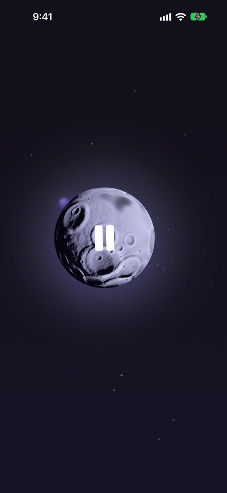
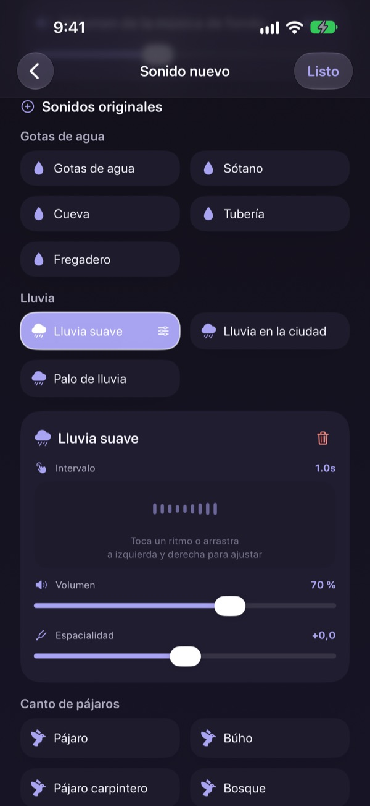
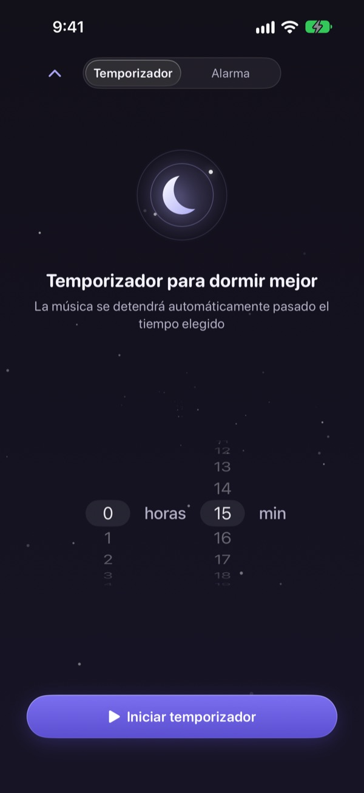
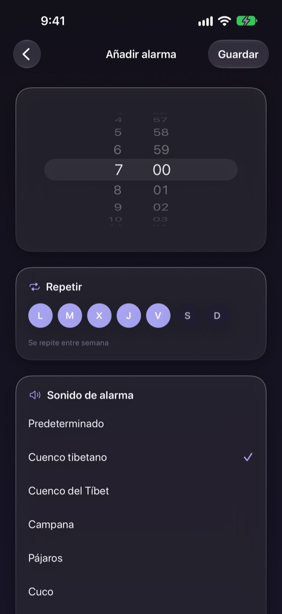
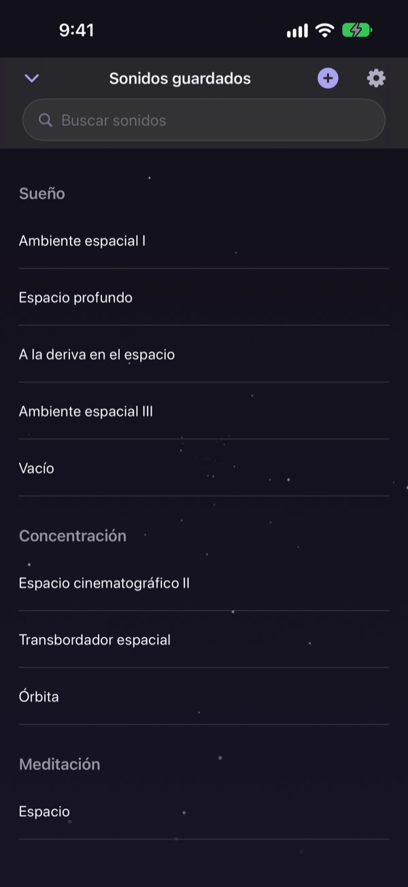

Deja de pasar la noche
buscando el sonido ideal
Mezcla una vez lluvia, gotas de agua y un cuenco tibetano en un sonido tuyo. A partir de la noche siguiente, solo tienes que tocar la luna.
Todos los sonidos se pueden escuchar gratis. Para iPhone y iPad.

¿Alguna vez has perdido una hora buscando algo para dormirte?
La lluvia es demasiado monótona, las olas suenan demasiado fuerte y el vídeo que pones se corta con un anuncio a mitad de la noche. Con Dalbit superpones tú mismo los sonidos que te gustan hasta dar con el que encaja contigo, y lo guardas detrás de una sola luna.
Crea tu sonido por capas
Superpón lluvia, gotas de agua, pájaros y cuencos tibetanos. Ajusta en cada capa el volumen, cada cuánto suena y desde dónde la oyes, y añade de fondo olas o piano.
Ponle nombre a la mezcla, guárdala y vuelve a ella cualquier noche.

Se apaga sin despertarte
El temporizador de sueño nunca corta el sonido de golpe: lo va bajando poco a poco para que el final no te despierte.
El sonido sigue con la pantalla apagada o en otra app, y si no tocas nada la pantalla se atenúa sola.

Despierta con algo suave
Configura alarmas con un cuenco tibetano, un cuenco cantor, pájaros o un cuco, y repítelas los días de la semana que elijas.

Una luna para todo
Toca la luna para reproducir y otra vez para pausar. Desliza a los lados para cambiar de sonido, hacia arriba para el temporizador y hacia abajo para tus sonidos guardados.
Si un sonido te convence, mantén pulsada la luna para añadirlo a favoritos.

Empezar lleva tres pasos
- 1
Toca la luna
Abre la app, toca la luna y el sonido empieza al instante.
- 2
Desliza a los lados
Ve pasando hasta que un sonido te guste.
- 3
Pon el temporizador y acuéstate
Desliza hacia arriba, elige un tiempo y después el sonido se irá apagando.
Lo que hace la luna
- Tocar
- reproducir, pausar
- Deslizar a los lados
- otro sonido
- Deslizar hacia arriba
- temporizador y alarmas
- Deslizar hacia abajo
- tus sonidos guardados
- Mantener pulsado
- añadir a favoritos
También puedes pausar y reanudar desde los controles de reproducción de la pantalla bloqueada.
Escuchar es gratis. Premium es para crear más.
Gratis
- Todos los sonidos
- Mezclar sonidos en capas
- Guardar hasta tres mezclas
- Temporizador de sueño que se desvanece
- Alarmas con sonidos suaves
- Favoritos
Dalbit Premium
- Crea y guarda todas las mezclas que quieras
Suscripción mensual con renovación automática y prueba gratuita
La suscripción se renueva automáticamente salvo que la canceles al menos 24 horas antes de que termine el periodo actual, y se cobra al acabar la prueba gratuita. Se aplican las condiciones de uso estándar de Apple (EULA).
Preguntas frecuentes
¿Cómo reproduzco y cambio los sonidos?
Toca la luna de la pantalla de inicio para reproducir y vuelve a tocarla para parar. Desliza a los lados para cambiar de sonido, hacia arriba para el temporizador y hacia abajo para tu biblioteca.
¿Se para el sonido si apago la pantalla?
No. Sigue sonando con la pantalla apagada o si cambias de app. Para pararlo, toca otra vez la luna o usa los controles de la pantalla bloqueada.
¿Qué pasa cuando termina el temporizador?
El sonido no se corta de golpe: baja poco a poco y luego se detiene, para no despertarte.
La alarma no suena.
Al crear tu primera alarma, la app pide permiso para las alarmas. Comprueba que esté activado en Ajustes > Dalbit.
¿Dónde se guardan mis mezclas?
Tus mezclas, alarmas y ajustes se guardan solo en este dispositivo. Si borras la app, se borran con ella.
¿Qué puedo usar gratis?
Todos los sonidos, mezclar capas y guardar hasta tres mezclas propias. El temporizador y las alarmas también son gratis. Premium quita el límite de mezclas.
¿Cómo cancelo la suscripción?
Ve a Ajustes > Cuenta de Apple > Suscripciones, elige Dalbit y cancélala. Si no la cancelas al menos 24 horas antes de que termine el periodo actual, se renueva automáticamente.
He cambiado de móvil y he perdido la suscripción.
Inicia sesión con la misma cuenta de Apple, abre la pantalla de suscripción de Dalbit y toca Restaurar compras.
¿Cómo informo de un error o sugiero una función?
Usa la opción de enviar comentarios en los ajustes de la app o escríbenos a la dirección de abajo. Solemos responder en unos días.
¿Dudas o ideas? Escríbenos a mizzking75@gmail.com.